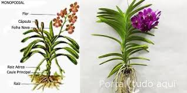

O QUE É UMA ORQUÍDEA?
Significado:

Orquídeas são todas as plantas que compõem a famíliaOrchidaceae,
pertencente à ordem Asparagales,uma das maiores famílias de plantas existentes.
Apresentam muitíssimas e variadas formas, cores e tamanhos e existem em todos os continentes,
exceto na Antártida, predominando nas áreas tropicais.
- Nome científico: Orchidaceae
- Classificação superior: Asparagales
- Reino: Plantae
TUDO O QUE VOCÊ PRECISA SABER SOBRE ESSAS FLORES!!!
Como cuidar:
 Alguns tipos de Orquídeas gostam de muita luz, já outros tipos preferem que a luminosidade seja mais baixa. Sempre fique atento ao que sua Orquídea se adapta melhor. O ideal é que em regiões com temperaturas mais altas você opte por vasos que seguram a umidade por mais tempo e faça regas bem mais frequentes. Já em regiões frias e úmidas, aposte em vasos de cerâmica e prefira regar com menos frequência, muitas vezes apenas borrifando água sobre a planta. As Regas das Orquídeas vão depender do tipo e espécie escolhida e também da região em que você vive. Se optar por orquídeas que pedem mais regas, se atente de sempre reservar um tempo para cuidar das plantas. Orquídeas gostam de ambientes bem arejados, então é interessante que você as deixe próximo a janelas quando optar por cultivá-las em casa ou apartamento. As plantas que são cultivadas no jardim ou quintal têm maiores chances de sofrer com o ataque de pragas. Ainda assim, isso também pode acontecer no caso de orquídeas criadas em vasos.
Alguns tipos de Orquídeas gostam de muita luz, já outros tipos preferem que a luminosidade seja mais baixa. Sempre fique atento ao que sua Orquídea se adapta melhor. O ideal é que em regiões com temperaturas mais altas você opte por vasos que seguram a umidade por mais tempo e faça regas bem mais frequentes. Já em regiões frias e úmidas, aposte em vasos de cerâmica e prefira regar com menos frequência, muitas vezes apenas borrifando água sobre a planta. As Regas das Orquídeas vão depender do tipo e espécie escolhida e também da região em que você vive. Se optar por orquídeas que pedem mais regas, se atente de sempre reservar um tempo para cuidar das plantas. Orquídeas gostam de ambientes bem arejados, então é interessante que você as deixe próximo a janelas quando optar por cultivá-las em casa ou apartamento. As plantas que são cultivadas no jardim ou quintal têm maiores chances de sofrer com o ataque de pragas. Ainda assim, isso também pode acontecer no caso de orquídeas criadas em vasos.
Hábitat e Crescimento:

As orquídeas adaptaram-se aos mais variados ambientes. Podem ser terrestres, crescendo tanto em campinas e savanas em meio à relva, como sobre o solo de florestas sombrias; epífitas sobre árvores ou arbustos, próximas ao solo abrigadas da luz, ou perto do topo das árvores e cactos, submetidas à bastante luz; litófitas crescendo sobre solos rochosos ou apoiadas diretamente nas pedras, psamófitas sobre a areia das praias, saprófitas em turfa e elementos em decomposição no solo, ou raramente aquáticas em brejos e áreas pantanosas. Um caso extremo é uma espécie subterrânea da Austrália da qual apenas ocasionalmente emergem as flores.
Apresentam crescimento contínuo ou sazonal, simpodial ou monopodial, agrupado ou espaçado, ascendente ou pendente, aéreo ou subterrâneo, o crescimento das orquídeas dá-se de maneiras muito diversas.Conforme o ambiente predominam certas formas de crescimento. Nas áreas tropicais o crescimento contínuo é mais comum, porém existem espécies de crescimento sazonal. Em áreas sujeitas a secas ou frio intenso o crescimento costuma ser sazonal. As orquídeas monopodiais costumam crescer de maneira contínua. As simpodiais apresentam certa sazonalidade.
Raízes:

As orquídeas não apresentam raízes primárias, que são raízes centrais principais de onde brotam outras raízes secundárias, mas apenas as raízes secundárias as quais brotam diretamente do caule e ocasionalmente de outras raízes. Frequentemente servem de depósitos de nutrientes e água e ajudam as plantas a reterem e acumularem de material nutritivo, que se deposita em suas bases. Em alguns casos são também órgãos clorofilados capazes de realizarem fotossíntese durante os períodos em que as plantas perdem as folhas. Variam em espessura, de muito finas a extremamente grossas. A estrutura das raízes diferencia-se muito entre as orquídeas, conforme a maneira e local onde crescem. Portanto, trata-se mais de um rizoma do que propriamente de uma raiz estruturada.
As espécies epífitas geralmente apresentam robustas raízes, cilíndricas enquanto aéreas, as quais assumem formato achatado após aderirem ao substrato. Em regra são recobertas por espessa superfície esponjosa e porosa denominada velame, tecido altamente especializado na absorção de água ou umidade do ar.
As espécies terrestres normalmente encontram-se espessadas em pequenas ou grandes estruturas parecidas com tubérculos de esféricos a longamente cilíndricos que servem de reserva de nutrientes e água e substituem os pseudobulbos presentes nas espécies epífitas. Ocasionalmente estes tubérculos separam-se da planta principal originando novas plantas.
A durabilidade das raízes varia em função dos fatores ambientais e geralmente é inferior à duração dos caules. Novas raízes costumam brotar durante ou no final do período de crescimento vegetativo da planta.
Apesar de geralmente não ser a fonte principal de nutrientes das orquídeas, estas geralmente valem-se da associação com um fungo chamado Micorriza que se aloja nas células exteriores do velame de suas raízes e excreta diversos nutrientes então diretamente absorvidos por suas raízes.
Veja mais orquídeas Click aqui